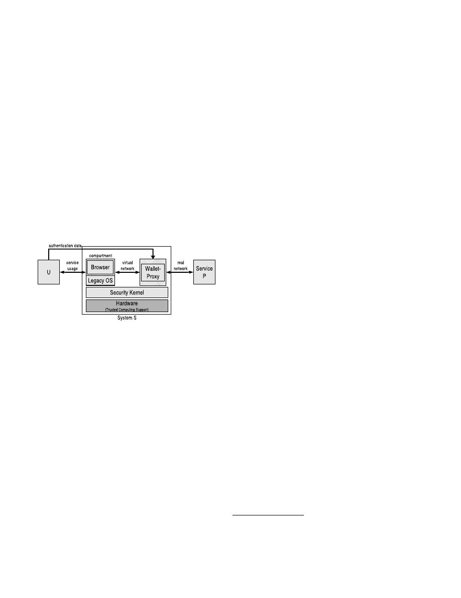
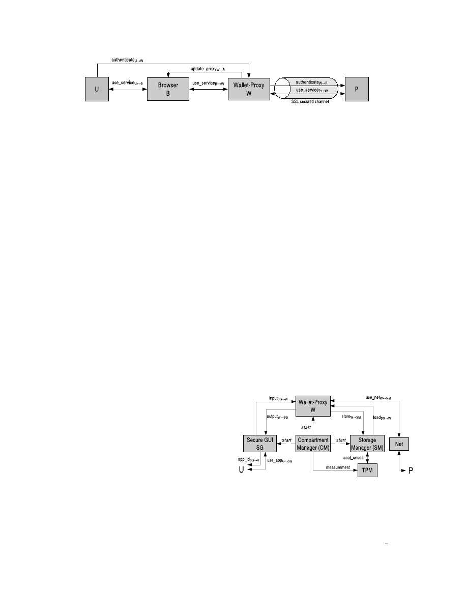

Compartmented Security for Browsers –
Or How to Thwart a Phisher with Trusted Computing
Sebastian Gajek, Ahmad-Reza Sadeghi, Christian St¨uble, and Marcel Winandy
Horst G¨ortz Institute for IT Security, Ruhr-University Bochum
Universit¨atsstr. 150, D-44780 Bochum, Germany
sebastian.gajek@nds.rub.de, sadeghi@crypto.rub.de, stueble@acm.org, winandy@ieee.org
Abstract
Identity theft through phishing attacks has become a ma-
jor concern for Internet users. Typically, phishing attacks
aim at luring the user to a faked web site to disclose per-
sonal information. Existing solutions proposed against this
kind of attack can, however, hardly counter the new genera-
tion of sophisticated malware phishing attacks, e.g., pharm-
ing Trojans, designed to target certain services. This paper
aims at making the first steps towards the design and imple-
mentation of a security architecture that prevents both clas-
sical and malware phishing attacks. Our approach is based
on the ideas of compartmentalization for isolating applica-
tions of different trust level, and a trusted wallet for stor-
ing credentials and authenticating sensitive services. Once
the wallet has been setup in an initial step, our solution re-
quires no special care from users for identifying the right
web sites while the disclosure of credentials is strictly con-
trolled. Moreover, a prototype of the basic platform exists
and we briefly describe its implementation.
1. Introduction
Identity theft has become a subject of great concern for
Internet users in the recent years: Since password-based
user authentication has established on the Internet to grant
users access to security critical services, identity theft and
fraud attracted attackers [25].
Hence, phishing—a col-
loquial abbreviation of
password fishing
—has become a
prominent attack. Whereas
classical
phishing attacks pri-
marily used spoofed emails to lure unwary users to faked
web sites where they reveal personal information (e.g.,
passwords, credit card numbers), current attacks have be-
come advanced in their number and technical sophistica-
tion [2, 11, 15]. The new generation of phishing attacks
does not solely address the weaknesses of careless Inter-
net users, but also exploits vulnerabilities of the underlying
computing platforms and takes advantage of legacy flaws
of the Internet:
Hostile profiling
addresses specific email
recipients to mount classical phishing attacks more pre-
cisely [6],
pharming
compromises DNS servers to resolve
domain name requests to phishing sites [2], and
malware
phishing
infiltrates customers’ computers, e.g., to log their
password stroking using malicious programs [17].
The most dominant reason for the proliferation of phish-
ing attacks is that strong assumptions and requirements are
made on the ability of ordinary Internet users when access-
ing sensitive services [13]. Internet users of average skill
often do not understand security indicators and cannot dis-
tinguish between legitimate and faked web sites [21]. To
reliably authenticate a web site, the user has to verify the
domain name, ‘https’ in the URL, and the server’s certifi-
cate. However, ordinary Internet users are unfamiliar with
the meaning of SSL and DNS. This is in particular true for
phishing victims, as most faked sites may have been ex-
posed if users had properly checked for the presence of SSL
channels. On the other hand, the rise of malware phishing
indicates that common computing platforms lack of appro-
priate protection in practice. The problem with malware
phishing attacks is that they are (i) specifically designed to
target certain services (e.g., regional banks), (ii) exploit op-
erating system characteristics, and (iii) deploy tailored func-
tionalities to obtain users’ credentials [2, 17]. It is straight-
forward for malware phishing attacks, e.g., to fake security
indicators, imitate the browser’s (or any security-critical ap-
plication’s) chrome or modify the system configuration, and
thus to circumvent current phishing (and malware) coun-
termeasures (see Section 5). Moreover, malware phishing
attacks are not transparent to the user and hence raise less
suspicion of identity theft than its classical variant.
In this paper, we make the first steps towards the design
and implementation of a security architecture that counters
both phishing attacks. We propose a modular platform that
uses a trusted wallet to store user’s credentials and authen-
ticate the sensitive services as a proxy on behalf of the user.
Hence, it does not require specific skills from users, e.g.,

to distinguish between real and faked web sites by identify-
ing security indicators. We discuss how to setup and update
credentials that are to be stored in the wallet and how to
solve problems that may arise when security-unaware users
want to apply the same credentials to different services. In
contrast to existing proposals our solution provides protec-
tion measures against the strongest type of phishing attacks,
namely malware phishing. To establish a secure execution
environment for the wallet, we show that a secure and com-
patible operating system can be efficiently realized by using
virtualization and we justify why trusted computing func-
tionality is needed.
In Section 2, we define terms and notations. In Section 3,
we discuss assumptions on the parties involved in a phish-
ing scenario. We infer the security requirements to prevent
phishing attacks in Section 4 and discuss related work in
Section 5. We describe our architecture in Section 6 and its
details in Section 7. In Section 8 we briefly describe an im-
plementation, and we conclude in Section 9. An extended
version of this paper can be found in [9].
2. Terms and Notations
Principals
are parties involved in the phishing scenario.
These are the user
U
who is interfaced to a computer system
S
and the service provider’s system
P
.
S
is a collection of
software components, such as the browsing application
B
.
Compartments
are isolated logical components in
S
. We de-
note the phishing adversary as
A
and say that
A
uses a set
of collection servers, such as a phishing site, to store and
retrieve identities.
Channels
are abstractions of communi-
cation paths. We distinguish between secure and insecure
channels and denote a secure channel as a communication
of two principals which is authentic, confidential, and of
integrity. For example,
send
U
→
S
is the unilateral channel
that
U
uses to send a message to
S
.
Identities
are security
sensitive information and are the targets of phishing attacks.
We denote an identity
ID
s
id
as the tuple (
s
id
,
c
id
,
attr
id
)
where
s
id
indicates a set of unique service provider identi-
fiers to authenticate
P
,
c
id
a set of credentials to get access
to
P
, and
attr
id
a set of attributes specific to user and ser-
vice, such as age, address, or credit card number. The set of
identifiers
s
id
are the URL and a server certificate (in case
of SSL), which we abbreviate as the tuple (
U RL
id
,
cert
id
).
Credentials
c
id
establish the claim that
U
is in possession
of
ID
s
id
and are denoted as the tuple (
u
id
,
pwd
id
), whereas
u
id
and
pwd
id
are username and password.
3. Security Assumptions
Based on the diversity of current phishing attacks, we
make the following assumptions.
Assumption 1 (Ordinary User):
We assume that an
ordinary Internet user
U
is unable to properly authenti-
cate
P
according to
s
id
, e.g., the domain name, HTTPS in
the URL, and the SSL certificate. However, recent studies
[13, 21] point out that ordinary Internet users usually do not
distinguish legitimate web sites from faked ones and do not
understand indicators which signal trustworthiness.
Assumption 2 (Honest Provider):
Let
P
be a stan-
dard service provider, then we assume that
P
and its ser-
vices are not corrupted.
P
fulfills all requirements to pro-
tect his services and enforces sound security policies; other-
wise intruders were able to steal identities from the service
provider’s database. This is in particular true for certifying
services. An adversary
A
may gain an original certificate
cert
id
for a phishing site [10]. This is rather a problem of
public key infrastructures and not the scope of the present
work. Moreover, services are resilient against so called web
spoofing attacks [7], where the adversary
A
initially dis-
plays a completely faked Internet and is able to spoof any
service. This is crucial because the user would disclose his
identity while signing in to any service.
Assumption 3 (Sound Browser):
Let
B
be a standard
browsing application running on
S
, then we assume that the
functionalities of
B
are implemented correctly. Browser de-
velopers are responsible for the soundness of their software
and features, e.g., Javascript. Nevertheless, if the browser is
vulnerable to, e.g., buffer overflow attacks, then the user’s
system should safeguard that the intruder gains no more in-
formation than given in the application boundaries of the
browser (see requirements below).
4. Security Requirements
The main motivation is to fulfill the following objective.
Objective (Confidentiality of Credentials):
The system
S
approves that user
U
and service provider
P
are mutually
authenticated and use a secure communication path. An ad-
versary must not gain access to the user’s credentials, i.e.,
credentials must only be given to authorized sites and au-
thorized components of
S
. The problem is that most web
applications provide only entity authentication, i.e., the au-
thentication is based on credentials and does not include all
components in the communication path. This opens a gap
for the communication of
U
to
S
and
P
, respectively.
To be able to provide the security objective, the system
S
has to fulfill the following requirements. In Section 7.1.5
we argue that only the fulfillment of all these requirements
protects against phishing attacks.
Requirement 1 (System Integrity):
The integrity of
security-critical components in
S
should be preserved. The
system cannot meet the other security requirements if its
critical components are infected by malicious programs.
Therefore, these components must be isolated from non-

critical components. Moreover, there must be means to pre-
vent offline attacks, e.g., when a different system is booted
on the same hardware device. Otherwise the system com-
ponents may be maliciously modified. Thus, an integrity
verification at system startup is required (secure boot).
Requirement 2 (Isolation):
The code and data of appli-
cations in
S
have to be protected during runtime and when
being persistently stored. Malware attacks may try to ex-
ploit vulnerabilities of the computing platform in order to,
e.g., log the user’s key strokes. Thus, applications of differ-
ent tasks should be isolated, e.g., scripts running in the web
browser should not be able to access the credential store of
the wallet. Where communication is necessary, only con-
trolled communication interfaces should be possible.
Requirement 3 (Trusted Path):
The input and output of
the application in
S
in which the user enters his credentials,
must be protected from unauthorized access by other appli-
cations. For instance, emulating password input dialogs is
a common attack of Trojan horse programs. Thus, the user
must be sure about the integrity, authenticity, and confiden-
tiality of the communication path to the application.
Requirement 4 (Robustness):
Security-critical compo-
nents of
S
should be robust against wrong configuration or
setup. Since we assume ordinary users, any configuration
or setup that the user must perform and which are needed to
fulfill the objective must be robust against mistakes.
5. Related Work
In this section, we discuss recent work on protection
mechanisms against phishing attacks. Since executing a
digital wallet for passwords on top of a secure operating sys-
tem is a fundamental approach of our work, we also discuss
related wallet-based solutions. We retain the discussion on
approaches that try to increase user awareness or prevent
the mounting of phishing attacks (e.g., secure DNS, sign-
ing emails) and building blocks of secure operating systems
(e.g., secure GUI) due to space limitations.
Phishing Countermeasures.
Boneh et al. [4] propose
heuristic checks of web sites. According to user-defined
thresholds, several iterative checks are performed to dis-
close a site’s authenticity. Other heuristics deploy whitelist-
ing and blacklisting approaches, recently adapted by promi-
nent web browser vendors [8]. Of course, these approaches
depend on the report of phishing sites.
There has also been work on fixing flaws of the browser’s
chrome, as some phishing attacks trick the user in verifying
a web site’s identity: Ye and Smith [27] render boundaries
of browser dialogs according to their origin in different col-
ors blinking synchronized to a reference window. Adels-
bach et al. [1] propose to personalize the chrome.
Since SSL authentication is a reliable method to authen-
ticate web sites, some research has been done to display
SSL to non-experts or to strengthen the user authentication.
Yee [28] proposes to color the address bar depending on the
trustworthiness of server certificates following the policies
of traffic lights. Moreover, Herzberg/Gbara [14] propose
to augment X.509 certificate with logos being displayed in
tamper-resistant regions of the chrome. Ross et al. [22] pro-
pose to hash a user-typed password and domain name to
provide stronger user authentication. This is an appropriate
countermeasure against classical phishing, assuming DNS-
based attacks are not present. We will make use of this idea,
which we slightly modify and discuss in Section 6.
None of the approaches achieves our security objective.
In particular, they do not fulfill requirements of isolation
and trusted paths. Malware phishing attacks are able to alter
the chrome and falsify security indicators, as no integrity
check of content and programs is provided in general.
Wallet-based Solutions.
Wu et al. [26] introduce a web
wallet, which distinguishes between input of sensitive data
and service usage by strictly deactivating login forms in the
browser. The user has to press a special security key when-
ever he wants to enter sensitive data. The wallet verifies
the security properties of the web site and asks the user to
explicitly choose the destination site for the sensitive data
from a list. The wallet passes the data to the chosen site
then. Herzberg [13] discusses a single-click approach stor-
ing passwords in a wallet that may be cryptographically pro-
tected by keys saved on hardware tokens. To defend against
malicious content, he proposes a browser sandbox model, in
which unapproved web objects (e.g., unsigned content) are
strictly blocked. Although these approaches reduce the risk
of classical phishing attacks, they do not prevent attacks that
fake the user interface and thus do not meet requirement 3.
Operation System Approaches.
Cox et al. [5] propose
the Tahoma browser operating system for web applications.
They use a security kernel that isolates different web ap-
plications by assigning to each service site a browser com-
partment, running an instance of a web browser, and re-
stricting the communication of that browser compartment.
Service providers may provide a policy defining to which
web sites the browser instance is allowed to communicate.
The authors also present an implementation based on Xen,
where the browser compartments are realized as virtual ma-
chines. The network communication of these browser com-
partments is controlled by a network proxy within the secu-
rity kernel. While the Tahoma approach is effective against
a malware-infected browser trying to pass credentials to a
different site other than stated in the policy, it provides no
means against classical phishing. If the user is tricked to
open a phishing site the Tahoma architecture can only guar-
antee that there will be an isolated browser compartment for
this site. But the user still has to authenticate the web site
and may be tricked to enter his credentials in the phishing
site. Thus, to prevent both classical and malware phishing

attacks, a combination of operating system approaches and
other phishing countermeasures seems to be necessary.
6. Architecture
To prevent phishing attacks, our approach relies on the
following ideas: We let a trusted component, called
wallet-
proxy
, (i) authenticate legitimate service sites, and (ii) con-
trol the secret data of the user’s identity including per-
forming the user authentication procedure (see Fig. 1) The
wallet-proxy acts as a web proxy from the browser’s point
of view. This allows the system to be interoperable to ex-
isting web browsers. The only action users need to per-
form is to initialize the wallet by storing sensitive data once.
Since the wallet performs the authentication on behalf of
the user and passes sensitive user data solely to approved
service sites, an unintentional disclosure of the user’s iden-
tity is prevented. This approach protects only against clas-
sical phishing. To protect the user also against malware
Figure 1. Conceptual view of the architecture.
phishing attacks, we need a trusted execution environment.
We accomplish this requirement by exploring the idea of
trusted and untrusted compartments (multicolored comput-
ing). The browser is contained within one compartment,
and the wallet-proxy within another compartment. This
is the main difference to existing wallet-based approaches,
since the wallet functionality is not realized as a browser
plug-in, but it is strictly isolated from the browser except
for one communication channel controlled by the security
kernel. Malware attacks targeting the browser compartment
are confined to this compartment and will not effect the
wallet-proxy compartment or other parts of the user’s sys-
tem. Moreover, malware attacks targeting the wallet-proxy
compartment must not result in an unauthorized disclosure
of the user’s credentials. Therefore we need an execution
environment that guarantees strong isolation and integrity.
Security Kernel.
We realize this environment by us-
ing the PERSEUS security framework [20]. The PERSEUS
framework has a security kernel that provides
isolation of
applications
,
system integrity
, a
secure graphical user in-
terface
, and a
trusted storage
. Moreover, the PERSEUS ar-
chitecture uses virtualization [3, 12] technology to execute
one or more instances of a legacy operating system on top of
the trusted software layer. Each virtual machine has its own
virtual resources and cannot interfere with the resources of
another virtual machine. Virtualization allows for an effi-
cient implementation and usage of legacy software.
However, virtualization alone is not sufficient to provide
a secure operating system. For instance, the integrity verifi-
cation process must rely on correct integrity reference val-
ues. Malware may try to modify these, and offline attacks
(e.g., booting a different system) may maliciously modify
critical system components. To confirm the security guar-
antees of integrity and confidentiality, the PERSEUS secu-
rity kernel is executed on hardware that supports Trusted
Computing functionality, e.g., as provided by a TPM
1
.
Trusted Computing Support.
Trusted Computing (TC)
provides security functionalities which we use for
secure
booting
and
sealed storage
. For this, we deploy TC-enabled
hardware that measures the integrity of the initial platform
boot code and enables the boot loader to establish a secure
booting sequence. A measurement is performed by accu-
mulating a cryptographic hash of the binaries in the boot
stack. Thus, the security kernel can check the integrity of
application binaries that are to be executed in compartments
(see, e.g., [19]). The TPM can encrypt data using a key that
never leaves the TPM. The decryption is bound to the plat-
form configuration stored in the TPM at encryption time
(sealing). Hence, the data can only be decrypted if the plat-
form has the desired state defined as being trustworthy. We
use this functionality to securely store the user’s credentials
and to ensure that only the wallet can access the storage if
the integrity of its inherent compartment is preserved.
7. Realization
In the following, we present details of our security ar-
chitecture. We first consider a pragmatic approach in Sec-
tion 7.1, assuming the underlying platform is an off-the-
shelf operating system. We describe a generic architecture
and show that this system is insufficient against malware
phishing attacks. Second, we show in Section 7.2 how the
needed security can be achieved by integrating the wallet-
based approach into the PERSEUS framework.
7.1. Wallet-Proxy
Our wallet-based approach basically consists of two
modules (see Figure 2): An arbitrary web browser
B
to ac-
cess and use services, and a wallet-proxy
W
to store cre-
1
The Trusted Platform Module (TPM) is the basic building block of
Trusted Computing technology as specified by the Trusted Computing
Group (TCG), see
https://www.trustedcomputinggroup.org
dentials, to identify legitimate service sites, and to perform
the user authentication. We prerequisite that the user en-
ters security-sensitive data only into
W
. Then
W
acts as
a network proxy for
B
in order to transparently encapsu-
late the mutual authentication between user
U
and service
provider
P
. The authentication information is the tuple (
s
id
,
c
id
,
attr
id
), which is kept in a credential store for each
s
id
.
7.1.1
Setup
In general, there are three cases of user authentication:
Two-Factor Authentication.
The user receives creden-
tials out-of-band that he uses in an SSL-protected connec-
tion. For example, in some European countries banks prefer
to send the authentication information by snail mail. Then
the authentication is split into two stages: First,
U
is in-
structed to login to site
s
id
:= (
U RL
id
,
·
) using user name
and password denoted as the tuple (
u
id
,
pwd
id
) to get access
to his account. Second, he uses an acknowledgment code
pwd
Ack
id
to confirm the login. The code may be printed,
such as a TAN list, or dynamically generated by a hard-
ware device (token). In that case,
U
sets up
W
manually
to store the credentials
c
id
:= (
u
id
,
pwd
id
) and the service
identifier
s
id
:= (
U RL
id
,
·
) received out-of-band. To config-
ure
W
,
U
uses channel
authenticate
U
→
W
. He may also
deposit some specific attributes
attr
id
. When the browser
B
requests
U RL
id
for the first time, a dialog pops up in-
forming
U
that the deposited credentials have been associ-
ated with this URL. Then,
W
saves the server’s certificate
fingerprint
cert
print
id
∈
cert
id
, which is used in subsequent
requests to identify that site, i.e., if
s
id
matches the tuple
(
U RL
id
,
cert
id
),
W
performs the login on behalf of
U
.
One-Factor Authentication.
User and service provider
have not agreed on a shared secret before. Therefore, the
user negotiates credentials over an SSL-protected web site
while signing in to the service. A registration is manda-
tory for
s
id
. For this,
W
looks for forms on the web site
which have to be filled out by
U
, blocks the forms to pre-
vent an unintentional disclosure of credentials and gener-
ates a credential profile. Blocking the forms is realized by
modifying the HTML code presented to the browser, and
this ensures that
U
enters credentials and attributes only into
W
. To setup the credentials,
U
configures
W
using chan-
nel
authenticate
U
→
W
by selecting the credential profile
and entering the required credentials.
W
will save them
with one slight modification, it will bind credentials to ser-
vice identifiers. Loosely speaking,
W
stores random pass-
words that are linked to cryptographically unique service
identifier, such as the fingerprint of the server’s certificate
cert
print
id
. Therefore,
W
retains the hash value of
pwd
id
user
concatenated with a random value
r
instead of the user-
typed password
pwd
id
user
∈
c
id
:
pwd
id
:=
hash
(
pwd
id
user
k
r
)
As it has been pointed out in, e.g., [22], we prevent on the
one hand that
U
applies low-entropy passwords to set up
the account, on the other hand we ensure that
U
does not
use the same password for different accounts.
Unprotected Authentication.
The user and service
provider negotiate credentials over an unprotected web site.
Note that confidentiality and authentication of transferred
data is not provided then. However, recall that this case
is of particular interest because most phishing-sites use an
unprotected connection. When an insecure channel is estab-
lished,
W
shows a warning dialog to inform
U
that eaves-
dropping attacks are possible. Anyway, should
U
decide to
register to the site despite the warnings,
W
proceeds as in
the case of one-factor authentication. Although the com-
munication is insecure, we show in Section 7.1.4 that this
prevents a certain class of attacks anyway.
7.1.2
Login
The
user
requests
a
site
U RL
id
using
channel
use service
U
↔
B
.
The
request
is
sent
through
use service
B
↔
W
to
W
.
If
W
identifies the service
according to
s
id
,
W
embeds the credentials
c
id
into the site
and logs in the user. All the user sees is being redirected to
the original logged-in site in the successful case. Then the
service is assumed to be trusted and the user
U
is allowed
to fill out additional forms (e.g., requests for the acknowl-
edgment code), which are not stored in
W
. Otherwise,
U
sees blocked forms requesting for credentials. This keeps
the user from revealing personal data to unknown sites and
alerts him to enter sensitive data into
W
only.
7.1.3
Update
An update is important if the user wants to modify some
service specific attributes
attr
id
or if the server certificate
is invalid. Changing the password should not be necessary,
as
W
uses high-entropy passwords linked to cryptographic
identifiers. To update
attr
id
, the user
U
invokes channel
authenticate
U
↔
W
and selects the corresponding creden-
tial profile to configure
W
. If the server certificate has to be
updated, we propose the following policy.
W
compares the
attributes of the original certificate
cert
id
to the new certifi-
cate
cert
id
new
. In particular, if the issuer is the same and
the issuing party is a trusted certificate authority, then
W
replaces
cert
id
in the credential store; otherwise, a warning
message pops up and the user is asked to run the setup.
We argue that the proposed architecture ensures that
user’s credentials are only transferred to legitimate sites and
hence protects against
classical phishing
attacks.
7.1.4
Security Analysis (Sketch)
We first show that the wallet-driven login protects against
unintentional disclosure of credentials. Then we consider
security aspects of setting up and updating the wallet. Re-
call that in a classical phishing attack two cases are possible
to lure the user
U
to a faked site
s
e
id
:

Figure 2. Communication channels of the browser and the wallet-proxy.
First, the user is tricked to request a faked site. This at-
tack is detected because
W
was invoked with an unknown
service identifier
s
e
id
6
=
s
id
and hence does not authenticate
U
. Moreover,
W
blocks the login forms. As the user typi-
cally does not have to type in the credentials
c
id
to get ac-
cess to
s
id
, the login request therefore attracts his attention.
Since we assumed that users enter critical data only into the
wallet,
U
’s identity is not disclosed. Nonetheless, the user
could intend to register to the faked site
s
e
id
. Because
s
e
id
is
unfamiliar to the wallet,
U
has to run the setup of
W
. Then,
U
initiates
W
to configure credentials bound to
s
e
id
, i.e.,
W
generates the password
pwd
e
id
. Due to the one-wayness
of the hash function, it is impossible for a computationally
bounded adversary
A
to gain access to the user-typed pass-
word
pwd
id
user
and
A
is unable to reconstruct
pwd
id
.
Second, the DNS server used by
U
has been manipu-
lated to resolve domain names to phishing sites. This attack
is detected because
W
fails to authenticate the site on the
basis of server certificate
cert
id
. More precisely,
W
com-
pares the digital fingerprints
cert
print
e
id
6
=
cert
print
id
. Again,
a computationally bounded adversary
A
is unable to com-
pute
pwd
id
(due to the one-wayness of the hash function).
This is also true for the update. Consider, e.g., the attack in
which the adversary
A
uses self-issued certificates.
W
sets
a password
pwd
e
id
, which is only valid for the faked side.
If credentials have been set up for an unauthenticated
service, it is straightforward for the adversary
A
to spoof
U RL
id
and to receive
pwd
id
in cleartext. But note that then
identity theft could occur at any node of the Internet. Nev-
ertheless, the randomness in
pwd
id
prevents that
U
reveals
pwd
id
user
. Assuming that
U
uses the same passwords for
different sites, we deter
A
from reusing the credentials
c
id
.
Thus, the setup mechanism meets requirement 4.
7.1.5
Discussion
The assumption that the user enters security-critical data
only into the wallet-proxy is in practice more realistic and
thus weaker than the assumption that the user always cor-
rectly verifies the result of the certificate verification. For
ordinary users, cryptographic certificates have a rather com-
plex meaning, whereas the identification of a clear-cut wal-
let interface should be much easier. However, in practice,
off-the-shelf operating systems do not meet the security re-
quirements 1, 2, and 3. Since we do not expect that the se-
curity of the those systems will significantly improve in the
future, the following subsection describes how the wallet-
proxy is integrated into the PERSEUS security framework.
7.2. Secure Platform for the Wallet-Proxy
We divide the system into trusted and untrusted parts fol-
lowing the approach of red/green computing [16]. Although
a division into only two domains, trusted and untrusted,
may not be generally adequate, this distinction will suf-
fice for the phishing scenario. In Section 6 we have already
summarized the security properties of the security kernel in
PERSEUS. So we only need to show how the wallet-proxy
interacts with the security kernel.
7.2.1
Interaction with Trusted System Components
In the following, we focus only on the core components of
the security kernel that are of relevance, see Figure 3. Each
component is executed within a distinct compartment. The
user
U
must be able to clearly authenticate the application
currently interacting with, especially when entering creden-
tials in
W
. Thus,
U
must be able to distinguish between the
different compartments. The Compartment Manager
CM
loads and starts all other components.
CM
also measures
the components and stores the measurement in the TPM.
Figure 3. Communication channels of the
wallet-proxy with trusted components.
The SecureGUI
SG
solely controls the input and output
channels to
U
. In order to enable the user to clearly iden-
tify compartments,
SG
provides the channel
app id
SG
→
U
,
which provides the user with the name and color of
the compartment that is currently displayed in channel
use app
U
↔
SG
. The input in this channel is passed to the
corresponding compartment. If
W
is currently displayed,
U
’s input is passed through
input
SG
→
W
to
W
, and the out-
put of
W
is displayed to
U
through
use app
U
↔
SG
. Each
compartment has its own distinct input/output channel to
SG
. The name and color of a compartment are derived from
its measurement, which authenticates the compartment.
To protect the confidentiality of the user’s credentials,
we use the sealing functionality to bind the secret data to
the measurement of
W
and the underlying security kernel.
W
uses the Storage Manager
SM
to persistently store the
credentials and its configuration.
W
sends the data through
channel
store
W
→
SM
to
SM
, and
SM
securely stores the
data by using the sealing functionality of the TPM and sav-
ing the encrypted data. This means, the credentials are en-
crypted using a key that is protected by the TPM, and the
decryption is only possible if the measurement of
W
and of
the security kernel are the same as at encryption time. When
W
requests to load its credential store, e.g., on system start-
up,
SM
uses the unsealing functionality of the TPM to de-
crypt the data. Then
SM
sends the decrypted data through
channel
load
SM
→
W
to
W
.
7.2.2
Security Analysis (Sketch)
We have already discussed that the wallet-based approach
protects against classical phishing attacks. We argue next
that our proposed architecture provides a secure platform to
also protect against malware phishing attacks. We classify
the attacks regarding the targets of modification:
First,
A
attacks the user-to-compartment channels. He
may try to (i) eavesdrop the channel between
U
and
W
, (ii)
fake the user interface of a compartment to emulate the user
interface of
W
, or (iii) modify the browser compartment
B
to unblock the forms and deceive
U
to disclose the cre-
dentials. In the first case, the SecureGUI
SG
controls the
input and output and only the compartment currently dis-
played receives
U
’s input. This means, malware running
in a compartment cannot obtain data
U
enters into another
compartment due to isolation. In the second case,
SG
pro-
vides a visual labeling of each compartment through chan-
nel
app id
SG
→
U
so that the user can identify the compart-
ment currently mapped to channel
use app
;
U
recognizes
the faked interface due to the red color of the compartment.
Thus,
SG
fulfills requirement 3. In the third case,
U
fills out
the unblocked forms and thus discloses the user-typed pass-
word
pwd
id
user
. However, due to the randomness
r
, which
is only known to
W
,
A
is unable to reconstruct
pwd
id
.
Second,
A
modifies the channels between compartments
in order to access secret data. However, the isolation mech-
anism confines changes to compartment boundaries, which
meets requirement 2. Any modification resulting from mal-
ware is restricted to that compartment the malware is run-
ning in. So, only the outgoing communication of this com-
partment can be changed. Since
CM
measures and authen-
ticates each compartment, the integrity of trusted compart-
ments can be verified. If the integrity of those components
is preserved, their channels are secure and thus confidential.
Third,
A
may try to modify a specific component, e.g.,
W
. There are two possible cases: If the attack is mounted
while the system is running, the isolation mechanism pre-
vents a modification across compartment boundaries. Al-
though modifications are allowed in untrusted compart-
ments, they cannot affect the trusted compartments. If, in
the second case,
A
can mount an offline attack, i.e., when
the system is not running, the secure boot process will de-
tect a modification of system components at next system
start-up, meeting requirement 1. Since
U
’s credentials are
sealed by the TPM to a specific measurement of the system,
they cannot be unsealed and thus cannot be accessed by
A
.
8. Prototype Implementation
Although our implementation is an early prototype, the
basic platform is available and executable. It is an instance
of the PERSEUS framework [20], where we use an x86
based system equipped with a TPM [23] to enable Trusted
Computing functionalities. We use the bootloader Trusted-
GRUB [24] to establish a secure boot process. The secu-
rity kernel is based on an L4 microkernel [18], which pro-
vides isolation of processes and controls inter-process com-
munication (IPC). IPC is used to realize the communication
channels between compartments. The trusted software layer
is implemented by native L4 applications. To reuse existing
software, we realized the browser and wallet-proxy com-
partments with L4Linux [12], i.e., a para-virtualized Linux
system. We used Linux because it is open source software
and can be easily modified, which is currently necessary for
the virtualization. Principally, an implementation based on
a virtualized Windows system would also be possible.
Within L4Linux compartments, ordinary Linux applica-
tions can be executed. We use a standard Firefox browser as
web browser. The wallet-proxy compartment is a stripped
down Linux system. It provides an interface to enter user-
name and password for web sites. However, we have not
implemented a web form parser functionality yet. We use a
hard-coded version where only the connection to our own
test server can be established, which simulates a service
provider. The Linux kernel in the wallet-proxy compart-
ment acts as a Internet network router for the browser com-
partment. If the browser compartment requests a connection
to the server, the wallet-proxy actually establishes the con-
nection, authenticates the user and the server’s SSL certifi-
cate, and redirects the traffic to the browser compartment.
We also have a SecureGUI that controls the input/output
to the user and provides each compartment an isolated
screen framebuffer. For more information, see [9].
9. Conclusion and Outlook
We have presented a security architecture to protect
against different types of phishing attacks. The solution
we propose is based on the concept of trusted wallets. It
particularly considers the average skilled users, who are
the main victims of phishing attacks. If the wallet is exe-
cuted on a secure platform, malware phishing attacks can
be prevented as well. We have shown how to efficiently im-
plement such a secure platform based on Trusted Comput-
ing and virtualization technology to reuse existing software
and keep development costs low. The security architecture
can also be implemented on top of a different virtualization
layer (e.g., Xen [3]). Upcoming processor architectures will
provide better support of virtualization, enabling the kernel
to run unmodified operating systems in compartments, such
as Windows. Since several computer vendors already ship
their platforms equipped with a TPM, we can reasonably as-
sume hardware support of Trusted Computing functionality.
The security kernel of our architecture is also used as basic
platform for other research and development projects
2
.
Future work includes enhancing the functionality of the
wallet-proxy, such as parsing forms embedded in emerging
web languages like Ajax, or storing and protecting addi-
tional attributes, e.g., age and address. We are also working
on a study to evaluate the usability of our implementation.
References
[1] A. Adelsbach, S. Gajek, and J. Schwenk. Visual Spoofing
of SSL Protected Web Sites and Effective Countermeasures.
In
ISPEC 2005
, volume 3439 of
LNCS
. Springer, 2005.
[2] Anti Phishing Working Group. Phishing Trend Report(s),
2005-2006.
http://www.antiphishing.com
.
[3] P. Barham, B. Dragovic, K. Fraser, S. Hand, T. Harris,
A. Ho, R. Neugebauer, I. Pratt, and A. Warfield. Xen and
the Art of Virtualization. In
SOSP ’03
. ACM Press, 2003.
[4] N. Chou, R. Ledesma, Y. Teraguchi, D. Boneh, and J. C.
Mitchell.
Client-side defense against web-based identity
theft. In
11th Annual Network and Distributed System Se-
curity Symposium (NDSS ’04)
. Internet Society, 2004.
[5] R. S. Cox, S. D. Gribble, H. M. Levy, and J. G. Hansen. A
Safety-Oriented Platform for Web Applications. In
Proceed-
ings of the 2006 IEEE Symposium on Security and Privacy
(S&P’06)
, pages 350–364. IEEE Computer Society, 2006.
[6] J. Evers.
Phishers get personal,
26 May 2005.
http://news.com.com/Phishers+get+
personal/2100-7349_3-5720672.html
.
[7] W. E. Felten, D. Balfanz, D. Dean, and D. S. Wallach. Web
Spoofing: An Internet Con Game. Technical Report 540-96,
Dept. of Computer Science, Princeton University, 1996.
2
For instance, the Turaya distribution at
http://www.emscb.org
[8] D. Florencio and C. Herley. Stopping a Phishing Attack,
Even when the Victims Ignore Warnings. Technical Report
MSR-TR-2005-142, Microsoft Research, 2005.
[9] S. Gajek, A.-R. Sadeghi, C. St¨uble, and M. Winandy. Com-
partmented Security for Browsers. Technical Report HGI-
TR-2007-001, Horst G¨ortz Institute for IT Security, Ruhr-
University Bochum, 2007.
http://www.prosec.rub.
de/publication.html
.
[10] I. Giang.
SSL Phishing, Microsoft Moves to Brand,
and Nyms.
Financial Cryptography
,
14 February
2006.
https://www.financialcryptography.
com/mt/archives/000654.html
.
[11] G. Goth. Phishing Attacks Rising, But Dollar Losses Down.
IEEE Security and Privacy
, 03(1):8, 2005.
[12] H. H¨artig, M. Hohmuth, J. Liedtke, and S. Sch¨onberg. The
Performance of
µ
-Kernel-based Systems.
In
SOSP ’97
,
pages 66–77. ACM Press, 1997.
[13] A. Herzberg. Protecting web users from phishing, spoofing
and malware. Cryptology ePrint Archive, Report 2006/083,
2006.
http://eprint.iacr.org/
.
[14] A. Herzberg and A. Gbara.
TrustBar: Protecting (even
Naive) Web Users from Spoofing and Phishing Attacks.
Cryptology ePrint Archive, 2004.
http://eprint.
iacr.org/2004/155.pdf
.
[15] K. J. Hole, V. Moen, and T. Tjstheim. Case Study: Online
Banking Security.
IEEE Security and Privacy
, 4(2):14–20,
2006.
[16] C. E. Landwehr. Green Computing.
IEEE Security & Pri-
vacy
, 3(6):3, Nov/Dec 2005.
[17] E. Levy. Criminals Become Tech Savvy.
IEEE Security and
Privacy
, 02(2):65–68, 2004.
[18] J. Liedke. On Microkernel Construction. In
15th ACM Sym-
posium on Operating System Principles
, 1995.
[19] J. Marchesini, S. W. Smith, O. Wild, J. Stabiner, and
A. Barsamian. Open-Source Applications of TCPA Hard-
ware. In
ACSAC
, 2004.
[20] B. Pfitzmann, J. Riordan, C. St¨uble, M. Waidner, and A. We-
ber. The PERSEUS System Architecture. Technical Report
RZ 3335 (#93381), IBM Research Division Zurich, 2001.
[21] J. D. T. Rachna Dhamija and M. Hearst. Why Phishing
Works. In
Proceedings of the Conference on Human Fac-
tors in Computing Systems (CHI2006)
, 2006.
[22] B. Ross, C. Jackson, N. Miyake, D. Boneh, and J. C.
Mitchell. Stronger password authentication using browser
extensions. In
14th USENIX Security Symposium
, 2005.
[23] Trusted Computing Group. TPM main specification. Main
Specification Version 1.2 rev. 85, Feb. 2005.
[24] TrustedGRUB.
http://trustedgrub.sf.net
.
[25] W. Wang, Y. Yuan, and N. Archer. A Contextual Framework
for Combating Identity Theft.
IEEE Security and Privacy
,
4(2):30–38, 2006.
[26] M. Wu, R. C. Miller, and G. Little.
Web Wallet: Pre-
venting Phishing Attacks by Revealing User Intentions. In
SOUPS’06
, pages 102–113. ACM Press, 2006.
[27] Z. E. Ye and S. Smith. Trusted Paths for Browsers. In
USENIX Security Symposium
, pages 263–279, 2002.
[28] K.-P. Yee.
Designing and Evaluating a Petname Anti-
Phishing Tool, 2005.
http://cups.cs.cmu.edu/
soups/2005/2005posters/23-yee.pdf
.